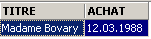
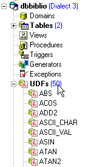
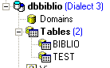

4. تعبيرات SQL
4.1. مقدمة
في معظم أوامر SQL، يمكن استخدام تعبير. لنأخذ، على سبيل المثال، الأمر SELECT:
SELECT expr1, expr2, ... from table WHERE تعبير |
تقوم SELECT باختيار الصفوف التي يكون التعبير صحيحًا فيها وتعرض قيم expr1 و expr2 و... لكل منها.
أمثلة
في هذا القسم، سنشرح مفهوم التعبير. التعبير الأساسي يكون على الشكل:
المعامل 1 المعامل 2
أو
دالة(معلمات)
مثال
في التعبير GENRE = 'ROMAN'
- GENRE هو المعامل 1
- 'ROMAN' هو المعامل 2
- = هو عامل
في التعبير upper(genre)
- upper هي دالة
- 'genre' هو معلمة لهذه الدالة.
سنغطي أولاً التعبيرات التي تحتوي على عوامل، ثم سنعرض الدوال المتوفرة في Firebird.
4.2. التعبيرات التي تحتوي على عوامل
سنصنف التعبيرات التي تحتوي على عوامل حسابية وفقًا لنوع المعاملات:
- رقمية
- سلسلة
- تاريخ
- منطقية أو بولية
4.2.1. التعبيرات ذات المعاملات الرقمية
4.2.1.1. قائمة بالمعاملات
لنفترض أن number1 و number2 و number3 أرقام. يمكن استخدام المعاملات التالية:
المعاملات العلائقية
: الرقم1 أكبر من الرقم2 | |
: الرقم 1 أكبر من الرقم 2 أو يساويه | |
: الرقم1 أقل من الرقم2 | |
: الرقم 1 أقل من أو يساوي الرقم 2 | |
: الرقم1 يساوي الرقم2 | |
: الرقم 1 لا يساوي الرقم 2 | |
: مثل | |
: الرقم1 يقع في النطاق [الرقم2، الرقم3] | |
: الرقم1 ينتمي إلى قائمة الأرقام | |
: رقم1 ليس له قيمة | |
: القيمة number1 موجودة |
المُشغِّلات الحسابية
: جمع | |
: طرح | |
: الضرب | |
: القسمة |
4.2.1.2. المشغلات العلائقية
يعبر التعبير العلائقي عن علاقة تكون إما صحيحة أو خاطئة. وبالتالي، فإن نتيجة هذا التعبير هي قيمة منطقية أو قيمة بولية.
أمثلة:


4.2.1.3. المُشغِّلات الحسابية
نحن على دراية بالتعبيرات الحسابية. فهي تعبر عن عملية حسابية يتم إجراؤها على البيانات الرقمية. وقد صادفنا مثل هذه التعبيرات من قبل: لنفترض أن السعر المخزن في سجلات ملف BIBLIO هو سعر قبل الضريبة. نريد عرض كل عنوان مع سعره شاملاً الضريبة بمعدل ضريبة القيمة المضافة 18.6%:
إذا كان من المقرر أن ترتفع الأسعار بنسبة 3٪، فسيكون الأمر كما يلي
قد يحتوي التعبير على عدة عوامل حسابية، بالإضافة إلى الدوال والأقواس. تتم معالجة هذه العناصر وفقًا لأولويات مختلفة:
1 | <---- الأولوية الأعلى | |
2 | ||
3 | ||
4 | <---- أولوية أقل |
عندما يتواجد عاملان من نفس الأولوية في تعبير ما، يتم تقييم العامل الموجود في أقصى اليسار أولاً.
أمثلة
سيتم حساب التعبير PRICE*RATE+TAXES على أنه (PRICE*RATE)+TAXES. وذلك لأن عامل الضرب يُستخدم أولاً. سيتم حساب التعبير PRICE*RATE/100 على أنه (PRICE*RATE)/100.
4.2.2. التعبيرات التي تحتوي على معاملات أحرف
4.2.2.1. قائمة العوامل
يمكن استخدام المعاملات التالية:
لنفترض أن string1 و string2 و string3 و string pattern هي
: string1 أكبر من string2 | |
: string1 أكبر من أو يساوي string2 | |
: string1 أقل من string2 | |
: string1 أقل من أو يساوي string2 | |
: string1 يساوي string2 | |
: string1 لا يساوي string2 | |
: متطابق | |
: string1 يقع في النطاق [string2, string3] | |
: string1 تنتمي إلى قائمة السلاسل | |
: string1 ليس له قيمة | |
: channel1 له قيمة | |
: string1 يطابق النمط |
عامل التسلسل
سلسلة1 || سلسلة2 : يتم ربط string2 بـ string1
4.2.2.2. عوامل العلاقة
ماذا يعني مقارنة السلاسل باستخدام عوامل مثل <، <=، إلخ؟
يتم ترميز كل حرف كعدد صحيح. عند مقارنة حرفين، تتم مقارنة رموزهما الصحيحة. يتبع الترميز المستخدم الترتيب الطبيعي للقاموس:
تأتي الأرقام قبل الحروف، والحروف الكبيرة قبل الحروف الصغيرة.
4.2.2.3. مقارنة سلسلتين
لنأخذ العلاقة 'CAT' < 'DOG' على سبيل المثال. هل هي صحيحة أم خاطئة؟ لإجراء هذه المقارنة، يقارن نظام إدارة قواعد البيانات (DBMS) السلسلتين حرفًا حرفًا بناءً على رموزهما الصحيحة. وبمجرد العثور على حرفين مختلفين، يُقال إن السلسلة التي تحتوي على الأصغر من الاثنين أصغر من السلسلة الأخرى. في مثالنا، تتم مقارنة 'CAT' بـ 'DOG'. ونحصل على النتائج المتتالية التالية:
بعد هذه المقارنة الأخيرة، يُعتبر السلسلة 'CAT' أقصر من السلسلة 'DOG'. وبالتالي، فإن العلاقة 'CAT' < 'DOG' صحيحة.
الآن دعونا نقارن بين "CHAT" و"chat".
بعد هذه المقارنة، تُعتبر العلاقة 'CHAT' < 'chat' صحيحة.
أمثلة


4.2.2.4. المشغل LIKE
يُستخدم عامل LIKE على النحو التالي: سلسلة LIKE نمط
يكون الشرط صحيحًا إذا كانت السلسلة تتطابق مع النمط. النمط هو سلسلة قد تحتوي على حرفين بديلين:
الذي يشير إلى أي تسلسل من الأحرف | |
التي تمثل أي حرف واحد |
أمثلة


4.2.2.5. عامل التسلسل

4.2.3. التعبيرات التي تحتوي على معاملات من نوع التاريخ
لنفترض أن date1 و date2 و date3 هي تواريخ. يمكن استخدام المعاملات التالية:
المشغلات العلائقية
صحيح إذا كان date1 أقدم من date2 | |
صحيح إذا كان التاريخ 1 أقدم من التاريخ 2 أو يساويه | |
صحيح إذا كان التاريخ 1 أحدث من التاريخ 2 | |
صحيح إذا كان التاريخ 1 في تاريخ 2 أو بعده | |
صحيح إذا كان تاريخ1 وتاريخ2 متطابقين | |
صحيح إذا كان التاريخ 1 والتاريخ 2 مختلفين. | |
مما يعادل | |
صحيح إذا كان التاريخ 1 يقع بين التاريخ 2 والتاريخ 3 | |
صحيح إذا كان التاريخ1 موجودًا في قائمة التواريخ | |
صحيح إذا كان date1 لا يحتوي على قيمة | |
صحيح إذا كان date1 له قيمة | |
صحيح إذا كان date1 يطابق النمط | |
المشغلات الحسابية
: عدد الأيام بين التاريخ 1 والتاريخ 2 | |
: التاريخ 2 بحيث التاريخ 1 - التاريخ 2 = الرقم | |
: تاريخ2 بحيث تاريخ2 - تاريخ1 = رقم |
أمثلة



كم عمر الكتب الموجودة في المكتبة؟

4.2.4. التعبيرات التي تحتوي على معاملات منطقية
تذكر أن القيمة المنطقية لها قيمتان محتملتان: صحيح أو خطأ. غالبًا ما تكون المعامل المنطقي نتيجة تعبير علائقي.
لنفترض أن boolean1 و boolean2 هما قيمتان منطقيتان. هناك ثلاثة عوامل ممكنة، وهي، حسب ترتيب الأسبقية:
| صحيح إذا كان كل من boolean1 و boolean2 صحيحين. |
| صحيح إذا كان إما boolean1 أو boolean2 صحيحًا. |
| تكون قيمتها عكس قيمة boolean1. |
أمثلة

نحن نبحث عن كتب ضمن نطاق سعري:

البحث العكسي:

انتبه لأولوية العوامل الحسابية!
SQL> select titre,genre,prix from biblio
where genre='ROMAN' and prix>200 or prix<100
order by prix asc

استخدم الأقواس للتحكم في أولوية العمليات الحسابية:
SQL> select titre,genre,prix from biblio
where genre='ROMAN' and (prix>200 or prix<100)
order by prix asc

4.3. وظائف Firebird المحددة مسبقًا
يحتوي Firebird على وظائف محددة مسبقًا. لا يمكن استخدامها مباشرة في عبارات SQL. يجب أولاً تشغيل البرنامج النصي SQL <firebird>\UDF\ib_udf.sql، حيث يشير <firebird> إلى دليل تثبيت نظام إدارة قواعد البيانات Firebird:

باستخدام IBExpert، نتبع الخطوات التالية:
- نستخدم أداة [Script Executive] التي يمكن الوصول إليها عبر الخيار [Tools/Script Executive]:

- بمجرد فتح الأداة، نقوم بتحميل البرنامج النصي <firebird>\UDF\ib_udf.sql:

- ثم نقوم بتنفيذ البرنامج النصي:

بمجرد الانتهاء من ذلك، تصبح وظائف Firebird المحددة مسبقًا متاحة للقاعدة البيانات التي كنت متصلاً بها عند تشغيل البرنامج النصي. لرؤية ذلك، ما عليك سوى الانتقال إلى مستكشف قاعدة البيانات والنقر على عقدة [UDF] الخاصة بقاعدة البيانات التي تم استيراد الوظائف إليها:

فيما يلي الوظائف المتاحة لقاعدة البيانات. لاختبارها، من المفيد أن يكون لديك جدول من صف واحد. لنسمه TEST:

ونعرفه على النحو التالي (انقر بزر الماوس الأيمن على Tables / New Table):
دعونا نضيف صفًا واحدًا إلى هذا الجدول:


لننتقل الآن إلى محرر SQL (F12) وننفذ عبارة SQL التالية:
الذي يستخدم دالة cos (جيب التمام) المحددة مسبقًا. يقوم الأمر أعلاه بحساب cos(0) لكل صف في جدول TEST، أي في الواقع لصف واحد. وبالتالي، فإنه يعرض ببساطة قيمة cos(0):

UDFs (الدوال المحددة من قبل المستخدم) هي دوال يمكن للمستخدمين إنشاؤها، ويمكن العثور على مكتبات UDFs على الويب. هنا، نصف فقط بعض تلك المتوفرة مع الإصدار القابل للتنزيل من Firebird (2005). نقوم بتصنيفها وفقًا للنوع السائد لمعلماتها أو وفقًا لدورها:
- الدوال ذات المعلمات الرقمية
- الدوال ذات المعلمات من نوع السلسلة
4.3.1. الدوال ذات المعلمات الرقمية
| القيمة المطلقة للرقم abs(-15) = 15 |
| أصغر عدد صحيح أكبر من أو يساوي العدد ceil(15.7) = 16 |
| أكبر عدد صحيح أقل من أو يساوي الرقم floor(14.3) = 14 |
| ناتج القسمة الصحيحة (الناتج عدد صحيح) لـ number1 على number2 div(7,3)=2 |
| الباقي من القسمة الصحيحة (النتيجة عدد صحيح) لـ number1 على number2 mod(7,3)=1 |
| -1 إذا كان number < 0 0 إذا كان العدد=0 +1 إذا كان الرقم > 0 علامة(-6) = -1 |
| الجذر التربيعي للعدد إذا كان العدد >= 0 -1 إذا كان الرقم < 0 جذر (16) = 4 |
4.3.2. الدوال ذات المعلمات النصية
ascii_char(الرقم) | رقم حرف رمز ASCII ascii_char(65) = 'A' |
lower(سلسلة) | تحويل السلسلة إلى أحرف صغيرة lower('INFO')='info' |
ltrim(string) | القص من اليسار - تتم إزالة المسافات التي تسبق النص في السلسلة: ltrim(' kitten')='kitten' |
replace(string1, string2, string3) | يستبدل string2 بـ string3 في string1. replace('cat and dog','cat','**')='**at and **og' |
rtrim(string1, string2) | القص من اليمين - مثل ltrim ولكن من اليمين rtrim('cat ')='cat' |
substr(string, p, q) | جزء من سلسلة يبدأ من الموضع p وينتهي عند الموضع q. substr('kitten',3,5)='to' |
ascii_val(character) | رمز ASCII للحرف ascii_val('A')=65 |
strlen(سلسلة) | عدد الأحرف في السلسلة strlen('kitten')=6 |